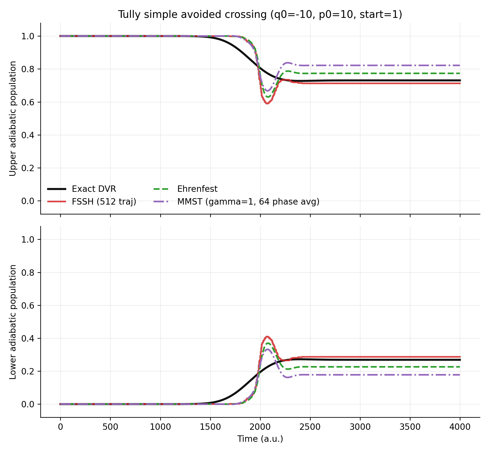
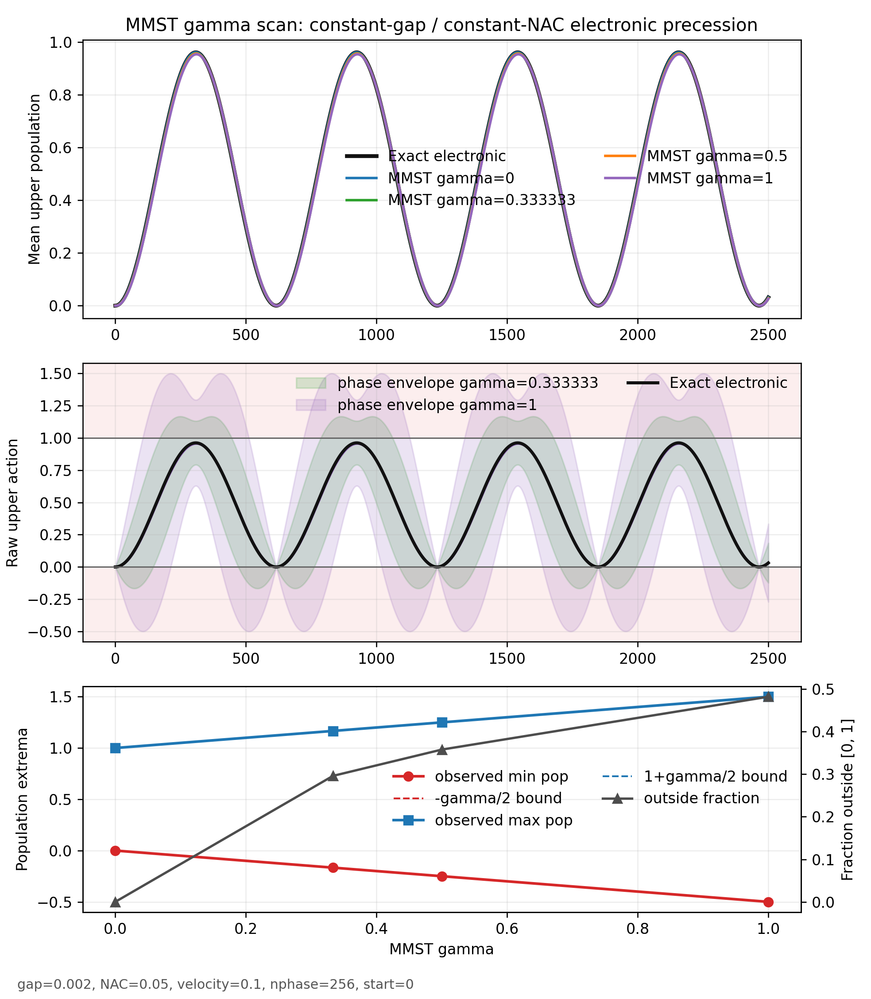
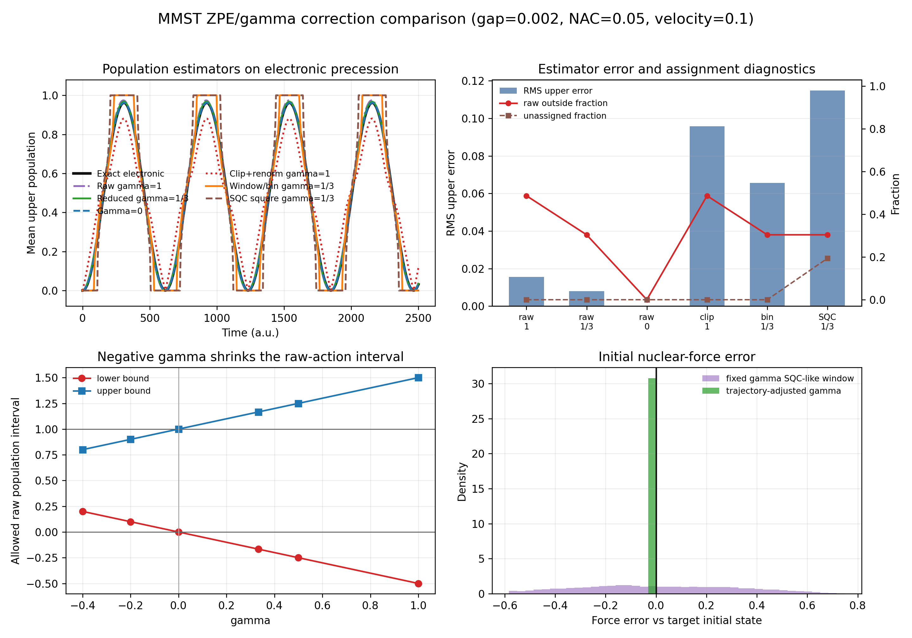

MQC Series - Part IV
MMST Mapping and ZPE Leakage
The previous MQC notes compared active-surface dynamics, mean-field dynamics, and a directed density-matrix correction. This part turns to the Meyer-Miller-Stock-Thoss mapping Hamiltonian. MMST is attractive because it gives discrete electronic states continuous classical variables, but that same enlargement of phase space creates one of its central failure modes: electronic zero-point-energy leakage.
Why Mapping Is Needed
Mixed quantum-classical dynamics needs a closure. The nuclei require forces, while the electronic subsystem is intrinsically discrete. Ehrenfest dynamics closes the problem with a density-matrix mean force. FSSH closes it with one active adiabatic surface and stochastic hops. MMST takes a different route: it first rewrites the discrete electronic Hilbert space in terms of continuous oscillator coordinates, then propagates those variables together with the nuclei.
This is not merely a convenient analogy. The Stock-Thoss construction maps an \(F\)-state electronic subsystem to \(F\) harmonic-oscillator degrees of freedom and is exact if the oscillator problem is treated quantum mechanically in the singly-excited oscillator subspace. The approximation enters when the oscillator variables are treated as classical coordinates and momenta. That distinction is important: the mapping itself is not the weak link; the classical use of the enlarged mapping phase space is.
The physical picture is simple. A discrete electronic state is replaced by a fictitious oscillator excitation: state \(i\) means that oscillator \(i\) carries one quantum while all other electronic oscillators remain in their ground levels. Electronic populations become oscillator actions, and electronic coherences become relative phases between oscillator coordinates. Diagonal electronic energies weight the oscillator actions, while off-diagonal couplings mix oscillator modes and transfer action between them.
MMST Hamiltonian
Start from an electronic Hamiltonian in a diabatic basis,
The Stock-Thoss mapping embeds the electronic basis into a singly-excited oscillator, or SEO, subspace:
Within that SEO subspace, the electronic transition operator is represented by a bosonic number-transfer operator,
so the exact quantum mapping Hamiltonian is
Using dimensionless oscillator variables,
the symmetrized classical symbol of \(\hat{a}_i^\dagger\hat{a}_j\) gives the real mapping bilinear. For a real symmetric diabatic Hamiltonian, the antisymmetric imaginary terms cancel in the full \(ij\) sum, leaving
This \(-\delta_{ij}\) term is the oscillator zero-point subtraction that appears when the quantum number operator is written in coordinate and momentum variables. Many quasiclassical mapping variants replace it by an adjustable \(-\gamma\delta_{ij}\) term. The direct MMST choice is \(\gamma=1\); reduced-\(\gamma\), SQC, and related variants use this offset as a controlled way to change the electronic zero-point-energy content of the mapping phase space.
Replacing the oscillator operators by classical coordinates and momenta then gives the basic MMST Hamiltonian,
Each electronic state \(i\) has one mapping pair \((x_i,p_i)\). It is often useful to combine them into a complex mapping amplitude,
The diagonal part gives the raw mapping population, or action estimator,
The nuclei move on the gradient of the mapping Hamiltonian. In a compact notation, the electronic variables feed back through a mean-field-like force,
This is why a basic MMST trajectory resembles Ehrenfest more than FSSH: the nuclei usually do not run on a single active surface. They feel a continuous force determined by the instantaneous mapping density.
Electronic Initialization
The simplest MMST initialization is a focused pure-state initialization. If the trajectory starts in electronic state \(k\), the electronic actions are set to
The mapping radii follow from the action definition,
The phases \(\theta_i\) are sampled uniformly. This means that even with a fixed nuclear initial condition, MMST is still an ensemble method: different electronic phases give different mapping coherences and, once nuclear back reaction is included, different nuclear forces. In the Tully SAC comparison below, MMST is therefore averaged over 64 electronic phase samples.
Negative \(\gamma\) requires more care. For an inactive state, focused initialization asks for \(r_i=\sqrt{\gamma}\). If \(\gamma<0\), that radius is not real. The local implementation therefore allows negative \(\gamma\) only with explicit mapping coordinates or a constrained/windowed sampler, rather than with the default focused pure-state initializer.
SAC Workflow Check
As a first placement test, the local toymodel implementation was run on Tully's simple avoided crossing with \(q_0=-10\), \(p_0=10\), \(M=2000\), and the initial adiabatic state set to the upper surface. The figure compares Ehrenfest, FSSH, MMST, and an exact finite-grid DVR reference.

The SAC benchmark is useful because it puts MMST into the same workflow as the earlier MQC notes. It is not the best place to see ZPE leakage. The average MMST population is smooth and finite, and the scattering outcome only reports an ensemble observable. To expose leakage, one needs to look inside the mapping variables themselves.
What ZPE Leakage Means
Quantum mechanically, the electronic mapping oscillators should remain in the singly-excited oscillator subspace. Classically, a trajectory can explore regions of the oscillator phase space that have no direct electronic-state interpretation. The raw action estimator can then become negative or larger than one:
This is the electronic zero-point-energy leakage problem. It is not just a plotting inconvenience. If the same raw mapping density also enters the nuclear force, then nonphysical actions can affect the trajectory before any post-processing correction is applied.
A minimal two-state example makes the issue transparent. Consider a constant energy gap and a constant derivative coupling. The nuclei are force-free and move at a fixed velocity, so the exact electronic problem is a clean two-level precession. For two states, the raw action obeys
Therefore a single raw population can range over
The leakage interval is built into the classical mapping geometry. With \(\gamma=1\), a single trajectory can reach almost \([-0.5,1.5]\). With \(\gamma=1/3\), the interval shrinks to approximately \([-1/6,7/6]\). With \(\gamma=0\), this particular pure electronic diagnostic has no raw action outside \([0,1]\), but that limit also removes the electronic zero-point offset that motivated the MMST phase-space broadening in the first place.
Gamma Scan
The following diagnostic uses the constant-gap model described above. The black line is the exact electronic solution. The colored curves in the top panel are phase-averaged MMST populations. The middle and bottom panels show what is hidden by that average: individual mapping trajectories leave the physical population simplex when \(\gamma>0\).

The numerical extrema match the simple bounds. In the 256-phase scan, \(\gamma=1\) reaches approximately \(-0.500\) and \(1.500\), while \(\gamma=1/3\) reaches \(-0.167\) and \(1.167\). The average population still tracks the exact oscillation reasonably well, which is precisely why leakage can be missed if only ensemble averages are inspected.
Correction Strategies
The literature does not contain one universal fix. Different corrections target different layers of the problem: the phase-space offset, the population estimator, the initial force, the nuclear quantum distribution, or the numerical integrator.
Reduced Gamma
The simplest idea is to reduce \(\gamma\). Since the raw action interval scales as \([-\gamma/2,1+\gamma/2]\), smaller positive \(\gamma\) directly shrinks the leakage range. Mueller and Stock treated this as a reduced ZPE correction and connected the choice of \(\gamma\) to level-density criteria. The drawback is that a smaller \(\gamma\) changes the mapping phase-space distribution and can move the method toward a classical-path or Ehrenfest-like limit.
Negative Gamma
He, Gong, Wu, and Liu pointed out that the mapping constraint permits negative \(\gamma\), provided
for an \(F\)-state electronic subsystem. In a two-state model, \(\gamma>-1/2\). Negative \(\gamma\) shrinks the raw-action interval from the other side; for example, \(\gamma=-0.2\) gives the interval \([0.1,0.9]\). This can be effective in some spin-boson benchmarks, especially at low temperature. It is not a drop-in focused initialization, however, because inactive states would require imaginary radii unless a constrained sampler is used.
Clipping and Renormalization
One can post-process the raw action by clipping negative values and renormalizing. This produces a physical-looking population trace, but it is only an estimator correction. It does not change the nuclear force that was already generated by the uncorrected mapping density.
SQC Windowing
The symmetrical quasiclassical approach replaces direct use of raw actions by window functions. Instead of reading \(n_i\) as a continuous population, a trajectory is assigned to a state when its action falls inside that state's window. Square, triangle, and generalized triangle windows are common. Windowing is a practical re-quantization of the electronic oscillator variables and is often much better behaved than the raw action estimator, but it introduces choices: window shape, width, initial sampling, final binning, and the treatment of unassigned trajectories.
Trajectory-Adjusted Gamma
SQC sampling gives each trajectory a slightly different electronic oscillator energy. On steep repulsive surfaces, this can make some trajectories feel an initial nuclear force that does not match the intended electronic state. Cotton and Miller proposed keeping the SQC-sampled \((x,p)\) distribution but adjusting the \(\gamma\)-parameter per trajectory so that the initial nuclear force corresponds exactly to the prepared electronic state. This is not meant to solve every long-time equilibrium issue, but it directly fixes a short-time force inconsistency that can otherwise create spurious trajectories.
Spin Mapping and Ring-Polymer Variants
More recent work often avoids the MMST oscillator leakage problem by changing the mapping geometry. Spin mapping places the electronic variables on a fixed-radius generalized Bloch sphere, preserving the normalization structure more naturally. Ring-polymer mapping extensions address a separate but related issue: nuclear zero-point energy and nuclear quantum statistics. These methods are not simple gamma tweaks; they replace the electronic geometry, the nuclear representation, or both.
Correction Comparison
The following figure separates the main correction ideas on the same constant-gap model. The top-left panel compares population estimators. The top-right panel summarizes estimator RMS error, raw leakage fraction, and window assignment failure. The bottom-left panel shows how negative \(\gamma\) changes the formal raw-action interval. The bottom-right panel isolates the trajectory-adjusted \(\gamma\) idea by sampling SQC-like initial oscillator energies and measuring the error in the initial nuclear force.

The table below summarizes the population diagnostic. The outside column is the fraction of raw mapping samples with at least one population outside \([0,1]\). The assigned column is the fraction of samples that survive the estimator's assignment rule. The window/binning rows keep the observable physical but do not remove the raw leakage that exists in the underlying mapping variables.
| Estimator | Gamma | RMS upper error | Raw min | Raw max | Outside | Assigned |
|---|---|---|---|---|---|---|
| Raw action | 1 | 0.0156 | -0.500 | 1.500 | 0.487 | 1.000 |
| Reduced raw action | 1/3 | 0.0079 | -0.167 | 1.167 | 0.304 | 1.000 |
| Raw action | 0 | 0.0000 | 0.000 | 1.000 | 0.000 | 1.000 |
| Clip and renormalize | 1 | 0.0958 | -0.500 | 1.500 | 0.487 | 1.000 |
| Window/bin | 1/3 | 0.0655 | -0.167 | 1.167 | 0.304 | 1.000 |
| SQC square window | 1/3 | 0.1148 | -0.167 | 1.167 | 0.304 | 0.806 |
What Should Be Implemented Next?
The current toymodel implementation should be read as a baseline fixed-\(\gamma\) MMST method. It is useful for testing the mapping Hamiltonian, phase averaging, raw-action leakage, and comparisons against FSSH, Ehrenfest, and DVR. It is not yet a complete SQC/MMST implementation.
The next natural implementation steps are:
SQC_MMSTwith square and triangle windows, including initial window sampling and final binning;- a constrained sampler for negative \(\gamma\), especially for spin-boson relaxation benchmarks;
- a trajectory-adjusted \(\gamma\) option for SQC initial conditions on steep surfaces;
- a split-Liouvillian or momentum-integral integrator for better long-time Hamiltonian stability;
- a spin-mapping or spin-PLDM-lite comparison, so the site can compare oscillator mapping with fixed-radius spin mapping.
A good diagnostic protocol should report more than the mean population. For every MMST-style calculation, the article should also record raw action extrema, outside-\([0,1]\) fraction, the estimator used for population, the value of \(\gamma\), the number of electronic phase samples, and any window assignment fraction.
Code Used in This Note
- mmst.py is the local
toymodel.methods.MMSTimplementation with focused initialization, phase averaging support, and explicit handling of negative-\(\gamma\) initialization. - mmst_sac_mqc_comparison.py runs the SAC comparison against Ehrenfest, FSSH, MMST, and DVR.
- mmst_gamma_zpe_scan.py runs the constant-gap gamma scan that exposes raw action leakage.
- mmst_correction_comparison.py compares reduced \(\gamma\), clipping, window/binning, negative-\(\gamma\) bounds, and trajectory-adjusted initial-force correction.
- mmst-sac-mqc-comparison-summary.csv stores the SAC final populations and DVR errors.
- mmst-gamma-zpe-scan-summary.csv stores the gamma-scan leakage statistics.
- mmst-correction-comparison-summary.csv stores the correction-comparison table used above.
References
- Meyer and Miller, J. Chem. Phys. 70, 3214 (1979).
- Stock and Thoss, Phys. Rev. Lett. 78, 578 (1997).
- Mueller and Stock, J. Chem. Phys. 111, 77 (1999).
- Cotton and Miller, J. Chem. Phys. 150, 194110 (2019).
- Chowdhury and Huo, J. Chem. Phys. 150, 244102 (2019).
- He, Gong, Wu, and Liu, J. Phys. Chem. Lett. 12, 2496 (2021).
- Cook, Runeson, Richardson, and Hele, J. Chem. Theory Comput. 19, 6109 (2023).